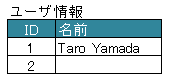
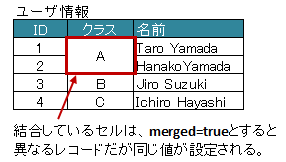
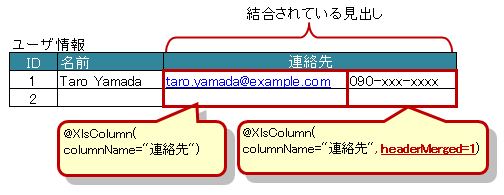

@XlsColumn¶
アノテーション @XlsHorizontalRecords または @XlsVerticalRecords において、 指定されたレコード用クラスのプロパティをカラム名にマッピングします。
属性 columnName で、見出しとなるセルのラベルを指定します。
フィールドやメソッドに対して付与します。
セルが見つからない場合はエラーとなりますが、属性 optional を true とすることで無視して処理を続行します。

Column
public class SampleRecord {
@XlsColumn(columnName="ID")
private int id;
@XlsColumn(columnName="名前")}
private String name;
// 存在しない列の場合は読み飛ばす
@XlsColumn(columnName="備考", optional=true)
private String name;
}
データの列が結合されている場合¶
同じ値がグループごとに結合されているカラムの場合は属性 merged をtrueに設定します。
こうしておくと、前の列の値が引き継がれて設定されます。

Column(merged)
public class SampleRecord {
@XlsColumn(columnName="ID")
private int id;
// 結合されてる可能性がある列
@XlsColumn(columnName="クラス", merged=true)
private String className;
@XlsColumn(columnName="名前")
private String name;
}
注釈
書き込みに時では、属性mergedの値が true であっても、上部または左側のセルと値が同じでも結合は基本的に行いません。
ただし、システム設定 XlsMapperConfig の項目「mergeCellOnSave」の値をtrueにすると結合されます。
見出し行が結合されている場合¶
見出し行が結合され、1つの見出しに対して複数の列が存在する場合は属性 headerMerged を使用します。
属性headerMergedの値には列見出しから何セル分離れているかを指定します。
属性columnNameで指定する見出しのセル名は、結合されているセルと同じ値を指定します。

Column(headerMerged)
public class SampleRecord {
@XlsColumn(columnName="ID")
private int id;
@XlsColumn(columnName="名前")
private String name;
@XlsColumn(columnName="連絡先")
private String mailAddress;
// 結合されている見出しから離れている数を指定する
@XlsColumn(columnName="連絡先", headerMerged=1)
private String tel;
}
見出しを正規表現、正規化して指定する場合¶
シートの構造は同じだが、ラベルのセルが微妙に異なる場合、ラベルセルを正規表現による指定が可能です。 また、空白や改行を除去してラベルセルを比較するように設定することも可能です。 [ver1.1+]
- 正規表現で指定する場合、アノテーションの属性の値を
/正規表現/のように、スラッシュで囲み指定します。- スラッシュで囲まない場合、通常の文字列として処理されます。
- 正規表現の指定機能を有効にするには、システム設定のプロパティ
regexLabelTextの値を trueに設定します。
- ラベセルの値に改行が空白が入っている場合、それらを除去し、正規化してアノテーションの属性値と比較することが可能です。
- 正規化とは、空白、改行、タブを除去することを指します。
- ラベルを正規化する機能を有効にするには、システム設定のプロパティ
normalizeLabelTextの値を trueに設定します。
これらの指定が可能な属性は、columnName です。
// システム設定
XlsMapper xlsMapper = new XlsMapper();
xlsMapper.getConfig()
.setRegexLabelText(true) // ラベルを正規表現で指定可能にする機能を有効にする。
.setNormalizeLabelText(true); // ラベルを正規化して比較する機能を有効にする。
// レコード用クラス
public class SampleRecord {
@XlsColumn(columnName="ID")
private int id;
// 正規表現による指定
@XlsColumn(columnName="/名前.+/")
private String name;
}